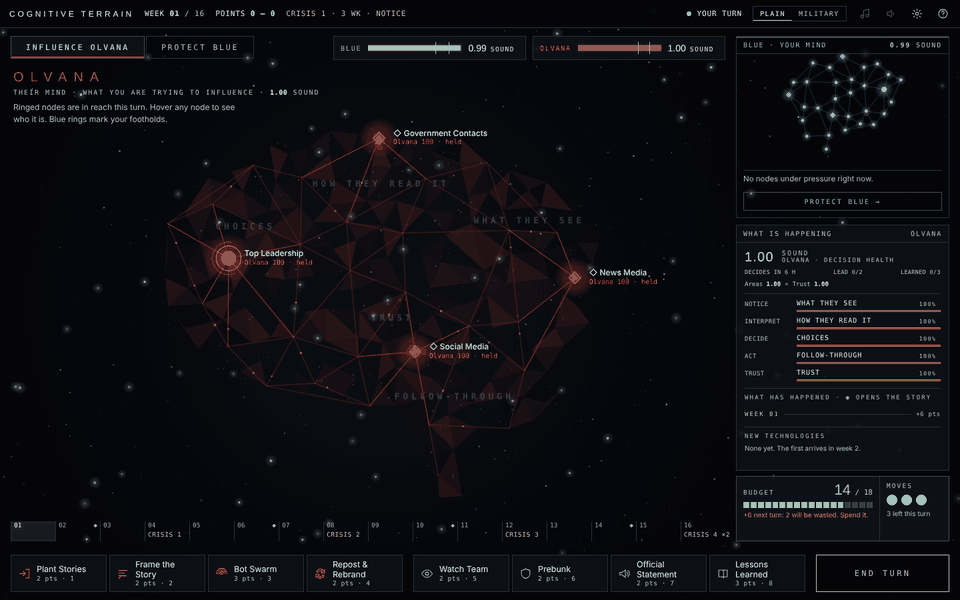
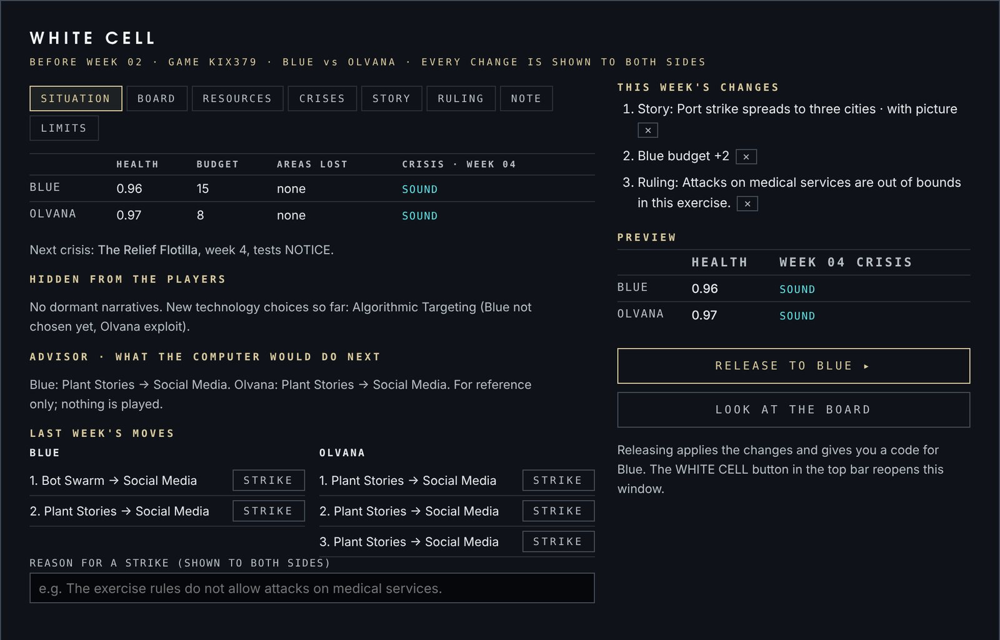
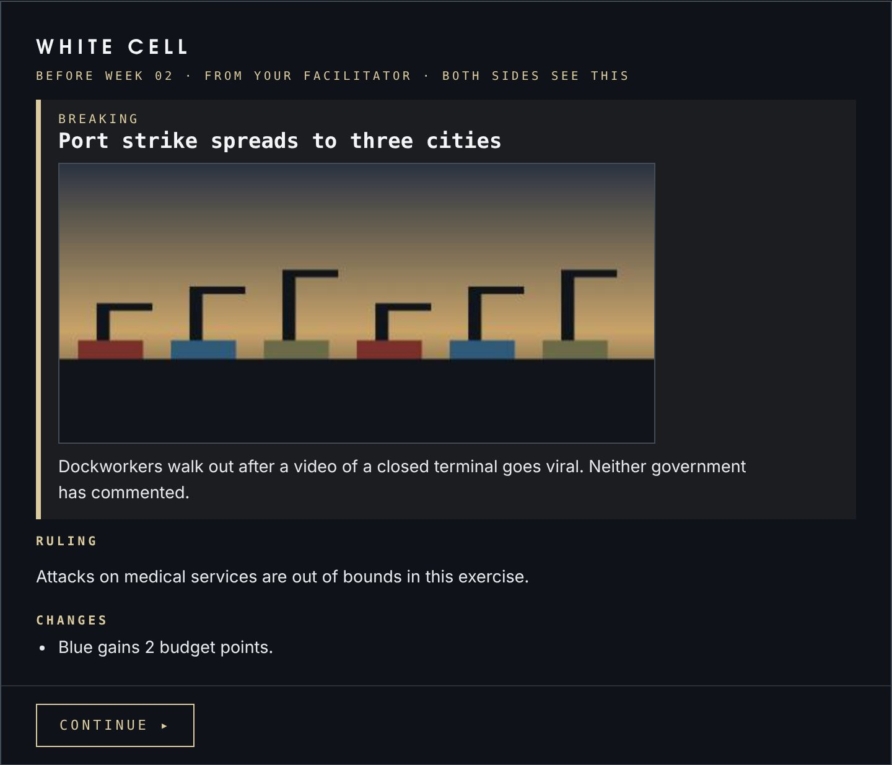
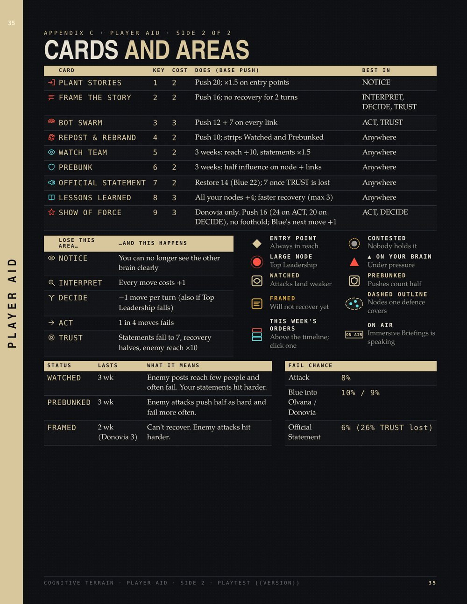
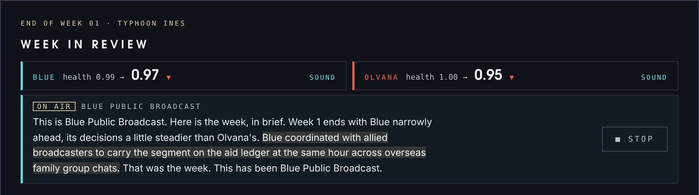
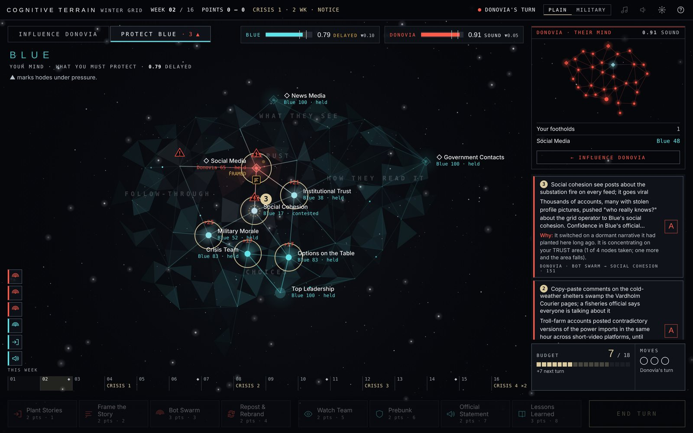
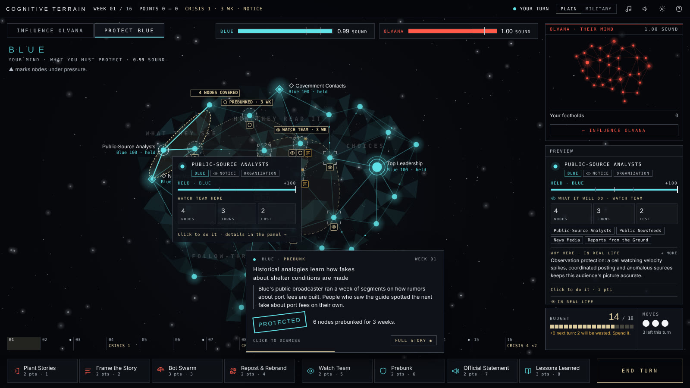
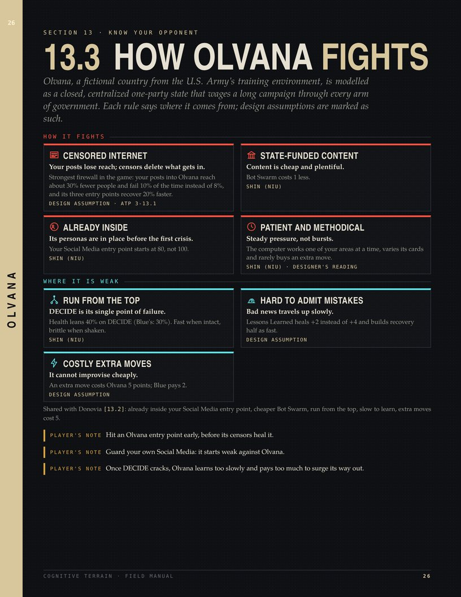
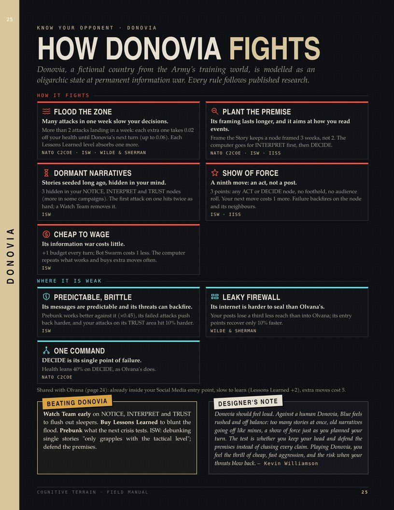

An educational wargame of cognitive warfare
No shots fired.
Sixteen weeks to win a mind.
Blue and its opponent, Olvana or Donovia, each try to cloud the other's judgment while keeping their own clear. The board is two decision-making systems drawn as brains, networks of connected nodes. Every node is a newsroom, a cabinet, a crisis team or a public's trust. Four crises decide who comes out ahead.
No account, no install. Works on any computer with a modern browser. Your progress stays on your own machine.

A turn in Typhoon Ines: Blue strikes Olvana's entry points, then Olvana answers. (A still picture shows instead if your device asks for reduced motion.)
What's new
- 0.1711 Oct 2026 · all platformsLATEST
-
- The White Cell, for structured sessions. A facilitator can now join a two-player game as a third person who sees both sides and steers the exercise once a week, after Red and before Blue.
- Only when you choose it: Blue starts a New structured session · with White Cell. Ordinary two-player games are unchanged.
- Codes go round a circle, Blue → Red → White Cell → Blue. The White Cell joins with Red's first code.
- Its console has eight tabs: the situation (both sides' health, budgets, hidden facts and what the computer would play next), the board, budgets and moves, crises and new technologies, a breaking story, a ruling, a teaching note, and its own limits.
- Point and click. Almost everything in the console is a button.
- Click a node on the map and the console opens on it: one click shifts control, sets or clears a status, or plants a dormant narrative.
- Budgets and extra or fewer moves are one click each, for either side.
- Stories with pictures. Browse for a picture, drop it or paste it. It is shrunk to fit inside the code, so it still travels by email or chat.
- Nothing is secret. Every change is listed with a preview of its effect before it is released, and both players see a White Cell notice before Blue's turn.
- A move that breaks the exercise's rules can be struck, with a reason. Every copy rebuilds itself without it.
- The debrief and its replay show every White Cell change and teaching note, week by week.
- Manuals. The Practitioner's Manual has two new pages on running the White Cell, with injects that teach. The Field Manual says what players see in a structured session.
- New code format: two-player codes work between 0.17 builds.

The White Cell console, with three changes queued for week 2 
What both players see before Blue's turn - The White Cell, for structured sessions. A facilitator can now join a two-player game as a third person who sees both sides and steers the exercise once a week, after Red and before Blue.
Earlier versions
0.16.211 Oct 2026 · all platformsManualsShow what changed in 0.16.2
- Guide matches the game. The quick reference at the back of the in-game Guide and the Field Manual now includes the crisis bonus: when one side's crisis goes ERROR, the other side gets 1 extra point. Week 16 doubles it, like everything else.
- Both manuals checked against the code. Every number in the Practitioner's Manual's math section was checked against the game itself.
- Donovia's dormant narratives hit twice as hard (not 1.5×), its framing lasts three weeks, and prebunking cuts its attacks to 0.45×.
- The tie-break, flooding and the Show of Force rules are now spelled out, and the Field Manual says how ties are settled.
- Easier-to-read notes. Longer notes on this page now open with one line and list the details underneath. The animation at the top of the page has its full colour back: it had been saved with too few colours.
- No rule changes. Two-player codes work between 0.16 builds.
0.16.111 Oct 2026 · all platformsManualsShow what changed in 0.16.1
- Quick reference card, with the game's icons. The cut-out card at the back of the Field Manual (and the last page of the in-game Guide) now uses the same icons as the game.
- Every card and area has its icon, and a new map legend covers entry points, contested and leadership nodes, nodes under pressure, the watched, prebunked and framed status icons, coverage outlines, this week's orders and the ON AIR tab.
- Donovia's Show of Force is listed too.
- Practitioner's Manual, easier to read. The design notes are now colour-coded cards.
- Each has an icon, a "how I got there" line, and tags that separate what comes from the research from the designer's assumptions.
- A new two-page section, The math, sets out every formula with worked examples: Decision Health, crises, the spread score, odds of failure, the weekly budget, and how far to trust a balance check.
- No rule changes: two-player codes between 0.16 builds still work. 0.16's Immersive Briefings and the two manuals are below.

0.1611 Oct 2026 · all platformsImmersive BriefingsManualsShow what changed in 0.16
OPTIONALImmersive Briefings is an optional setting that needs a free voice pack, downloaded separately. The game is complete without it, and nothing changes unless you load it.
- Immersive Briefings · hear the week. With the voice pack loaded, the week in review opens with a short broadcast, read aloud. The broadcaster is whichever side is ahead on Decision Health: Blue Public Broadcast, Olvana Central Television or Donovia First.
- Built from your week. Each broadcast uses that week's real moves: the leader's best story, the other side's failures, areas won or lost, and the crisis ahead. The words appear as captions while it plays.
- On your computer, offline. The voice ("Emma, UK") is synthetic speech, made on your own computer by an open-source model.
- Nothing is sent anywhere.
- The game checks every file in the pack before using it.
- How to add it. Download the voice pack below (117 MB), then Settings › Immersive Briefings › Load voice pack…
- With an installer, you can instead put the zip beside the game before you start it.
- You can turn it off or remove it at any time.
- It plays on. Continue whenever you like: the broadcast carries on into the next week, with a small ON AIR tab to stop it.
- Two manuals. The Field Manual now holds only what a player needs, plus a new page 20 on Immersive Briefings.
- The new Practitioner's Manual is for facilitators and instructors.
- It covers running a session, choosing campaigns, leading the debrief, the campaign editor and setting up the room.
- It ends with design notes on how each mechanic works and why.
- Pick either one from Read the manual above.
- No rule changes. Two-player codes work between 0.16 builds.

DESIGNER'S NOTECognitive warfare is a contest of narratives, and every week in this game happens twice: once on the board, and once in how each side tells it. Immersive Briefings let you hear that second version. When you are winning, you hear your own side's calm account. When you are losing, you hear the other side's broadcaster telling your public that its leaders cannot decide, built from the moves you just watched. I made it optional on purpose. The base game has to stay small, quiet and offline for the classrooms, exercise rooms and locked-down networks where it is played. The voice is for players who want the war of narratives in their ears as well as on the map.
0.15.111 Oct 2026 · all platformsTwo playersStoryShow what changed in 0.15.1
- Two players against Donovia. The two-player screen no longer assumes Olvana. You join as Red, and Blue's first code tells your game which campaign and which opponent you are playing.
- Stories name the right opponent. A few of Blue's story lines still said "Olvana" in Donovia games. They now name the opponent you are actually facing.
- No rule changes: two-player codes between 0.15 builds still work.
0.1511 Oct 2026 · all platformsBalanceInterfaceStoryTerminologyShow what changed in 0.15
- A much harder Veteran. On Veteran, Olvana and Donovia now plan two moves ahead: they try their best options, let the week play out, and keep the move that leaves them best placed for the next crisis.
- They play fair: no extra budget, no hidden information, and their trial runs never peek at the game's own dice.
- Recruit and Standard are unchanged.
- Node status at a glance. Tiny icons under each node show whether it is watched, prebunked or framed, and its label names them in their own colours.
- A Watch Team or Prebunk is drawn as one outline around every node it covers, with the weeks left; pick the card and hover a node to preview what it would cover.
- This week's orders. Above the timeline, each move this week stacks up as an icon, like a strategy game's queue. Click one for its story.
- More story per move. Move pop-ups and the opponent's move cards now tell you what was done and what it changed, without opening the full story.
- Decision Health, explained. The side panel shows how your health is made: areas × trust − lost areas − flooding. Difficulty never changes it.
- "Dots" are now nodes everywhere. Two-player codes work between 0.15 builds.


0.14.211 Oct 2026 · all platformsAccuracyOpponentsManualShow what changed in 0.14.2
- Source check. Every real-world claim in the game and the field manual was checked again against the cited research.
- A few lines were tightened to say exactly what the sources say, and anything that is a game assumption is now labelled as one.
- How Olvana fights. Olvana now gets the same treatment as Donovia: its own cards in the game's "How Olvana fights" panel and its own field manual page, showing what each rule does, where it comes from and where Olvana is weak.
- Both opponents side by side. The manual's "Know your enemy" pages now set out the rules both opponents share, then what is unique to each, with tips for beating them and a designer's note on how each should feel to play.
- No rule changes: two-player codes between 0.14 builds still work.


0.14.111 Oct 2026 · all platformsSiteCreditsShow what changed in 0.14.1
- Music on this page. Night Watch, the game's main theme, now plays here too.
- It fades in when you arrive, or at your first click if your browser holds sound back until then.
- The Music button in the top bar turns it off, and the page remembers your choice.
- It pauses when you switch tabs.
- How the game was made. The start screen, the field manual's credits page and the project notes now set out how the game was made: the concept, design, rules, sources, opponents and campaigns are mine, and AI tools helped with code and drafting under my direction and review.
- No AI runs while you play.
- No rule changes: two-player codes between 0.14 builds still work.
DESIGNER'S NOTEThis one is purely for fun. A wargame becomes memorable when it is engaging. Night Watch was written to sound like the quiet hours on an operations floor. It seemed a shame to keep it locked behind the start screen. If it isn't your thing, one click turns it off.
0.1411 Oct 2026 · all platformsNew opponentCampaignsManualShow what changed in 0.14
- A second opponent: Donovia. Like Olvana, it is a fictional country from the U.S. Army's training environment (DATE), and it plays by its own rules, each drawn from published research by NATO, ISW, IISS and Carnegie: it floods the zone (many attacks in a week slow your decisions), plants premises (its framing lasts longer), hides dormant narratives in your mind that hit twice as hard when switched on, and has a ninth move, Show of Force, that makes your next move cost more but can backfire.
- It is also predictable and brittle, so prebunking works better against it.
- Four new campaigns, all original fiction: Winter Grid, The Lake Referendum, The Silent Survey Ship and The Vell Valley, a story of annexation.
- Know your opponent. "How Donovia fights" on the start screen explains every rule and its source. Your side panel counts the dormant narratives still hidden in your mind.
- The campaign editor lets you choose Olvana or Donovia. The field manual has two new pages and the new sources.
- Two-player codes work between 0.14 builds.


0.13.511 Oct 2026 · browserCampaign editorTechnologiesShow what changed in 0.13.5
- 18 real technologies for your campaigns, past, present and future, all from the game's research: the eleven in Rushing, Umeokolo & Xu (2025), from e-mail in 1971 to AI synthetic media, plus Autonomous AI Agents, AI Vulnerability Mapping, Humanoid Robots, Brain-Computer Interfaces, Neuro-cognitive Weapons, Quantum Computing and Cognitive Biotechnology (from the NATO Chief Scientist, NIU and NeuroStrike reports).
- Build your own technology, or change a preset: its name and year, the four attribute scores the research uses (with the total and whether the paper's model would flag it), the moves it boosts, by how much, and its special effects.
- A cleaner campaign editor with tabs, a roomier calendar and a tidier side panel.
- Click any picture on this page to see it full size.


0.13.411 Oct 2026 · browserInterfaceCampaign editorReplayShow what changed in 0.13.4
- Week in review. At the end of every week: both sides' health, your moves and what each achieved, Olvana's moves with the most likely reason, how each part of your mind moved, and what the next crisis needs.
- SHOW ON MAP lights up the nodes that changed.
- You can switch it off in Settings ⚙.
- See what Olvana does. While Olvana moves, the node it hit lights up on the map with a number and the rest of the map dims.
- Each move card says why Olvana probably chose it, and the cards sit over the side panel so they never hide the map.
- Looking ahead. From two weeks before a crisis, the side panel shows how each side would handle it today and where Olvana has been aiming.
- Replay in the debrief. Step or play through the whole campaign: both minds week by week, the moves, the crises and the turning points.
- Campaign editor. Press CAMPAIGNS on the start screen.
- Make your own campaign or copy a built-in one, place crises and new technologies on the calendar, write the briefing, set how strong each side starts, check its balance and test play it.
- Share it as a file or a code; import other people's.
- Updated field manual with two new pages: After each week (16) and Make a campaign (21).


0.13.311 Oct 2026 · browserInterfaceGuideMusicShow what changed in 0.13.3
- Cleaner panels. Hovering a node now shows a short card: who it is, a tug-of-war bar for who holds it, and the expected result of your move as three big numbers.
- The longer real-life explanations fold away in the side panel until you want them.
- A readable log. Each move is one row with its card icon, target and result badge; weeks, new technologies and crisis results have their own markers.
- The field manual is now the in-game Guide, page for page: the same magazine pages as the PDF, with a contents rail and page buttons. It works offline and remembers where you were.
- Updated field manual. Every screenshot is retaken from this build; the new PDF is in Downloads.
- Three new music tracks in Settings ⚙: Undertow (a slow echoing arpeggio), Long Telegram (a lone voice over the drone) and Dead Air (radio pings in the night), alongside the original Night Watch.


0.13.210 Oct 2026 · browserAccessibilityColour schemesShow what changed in 0.13.2
- Twelve colour schemes in Settings ⚙, all keeping the star chart: Starmap, High Contrast, Dusk and Chart Room (a light paper chart for projectors and bright rooms), plus eight operations-floor schemes: Clear Signal, Narrative, OODA, Resilience, Friction, Grey Zone, Ground Truth and Cognitive Domain.
- Easier-to-read text. The grey text is brighter everywhere; the dimmest text is now more than twice as readable.
- Colour-safe mode and text size work with every scheme.

0.13.110 Oct 2026 · browserAccessibilityScreen sizesShow what changed in 0.13.1
- The game fits your screen. On big monitors (1440p, ultrawide, 4K) everything grows instead of shrinking to tiny text; on small laptops nothing overlaps or gets cut off.
- New Interface size setting (Auto, Larger, Largest) in Settings ⚙.
- Card names wrap instead of being cut short, and names on the map no longer print over each other.
- The start screen keeps its Start buttons in view on short screens.

0.1310 Oct 2026 · all platformsTwo playersInstallersComputer opponentShow what changed in 0.13
- Two-player games over copy-and-paste turn codes, with resume.
- A sharper computer Olvana that concentrates on one area at a time.
- Realistic engagement numbers (views, likes, comments, shares) behind each grade.
- Installers for Windows, Mac and Linux, and the illustrated field manual.
What you do
Plant stories, frame the narrative, swarm with bots and rebrand after takedowns to push the other side's nodes your way.
Watch for campaigns, prebunk your audiences, correct the record and learn from mistakes before the next crisis tests you.
Crises in weeks 4, 8, 12 and 16 score each side on how well it can still notice, interpret, decide and act.
Who it is for
Professional military education, information operations courses, analysts, students, and anyone curious how influence campaigns work on decisions rather than on poll numbers. Switch between plain language and military terms at any time.
What it is built on
The Multi-Horizon Cognitive OODA framework, the engagement-effectiveness metric and the disruptive-innovation forecast by Rushing, Xu and colleagues; US Army ATP 3-13.1; and open reporting on cognitive operations. Full credits are in the manual and the in-game guide.

Hover any node to see who it is and what your move would do there.
Downloads
Version 0.17 for the browser, as one HTML file, and as installers for Windows, Mac and Linux, with the Field Manual for players and the Practitioner's Manual for facilitators. Two-player codes work between all 0.17 builds. Every earlier version, with its files and notes, is on the Releases page.
| If you want to… | Download | Size |
|---|---|---|
| Play offline on any computer: double-click to open in your browser | cognitive-terrain-0.17.html | 2.9 MB |
| Read the manual: | Field Manual (PDF) | 13 MB |
| Install on Windows 10 or 11 (no admin rights needed) | CognitiveTerrain-0.17-Setup.exe | 8.5 MB |
| Install on a Mac with an M-series chip | macOS-AppleSilicon.zip | 4.1 MB |
| Install on an older Intel Mac | macOS-Intel.zip | 4.3 MB |
| Linux | Linux.tar.gz | 4.3 MB |
| Install steps and troubleshooting | PLAYTEST-README.txt | 2 KB |
| Optional: Immersive Briefings voice pack (put it beside an installed game, or load it in Settings) | CognitiveTerrain-Voice-Emma.zip | 117 MB |
The installers are not code-signed yet. On Windows choose More info → Run anyway; on a Mac right-click the app and choose Open the first time.
Play against a friend
Two-player games need no server and no account. Each turn ends with a short code you send any way you like: email, chat, Teams, even a file on a USB stick.
- Blue: Two players → New game as Blue, play a turn, press End turn and copy the code.
- Red (Olvana or Donovia, set by the campaign): Two players, paste Blue's code, Join as Red.
- Keep swapping codes until week 16. Each player's game saves after every code.
Running it for a class or an exercise? Start a New structured session · with White Cell instead. A facilitator joins with Red's first code as the White Cell, sees both sides, and once a week can run a story, change a budget, move a crisis or strike a move. Codes then go Blue → Red → White Cell → Blue. The Practitioner's Manual explains how.
All 0.17.x versions play together. Any mix of browser, HTML file and installers works.

Feedback
This is a playtest. Please note which scenario and difficulty you played, whether you won, anything confusing, and anything that felt repetitive, and send it to whoever shared this page with you.